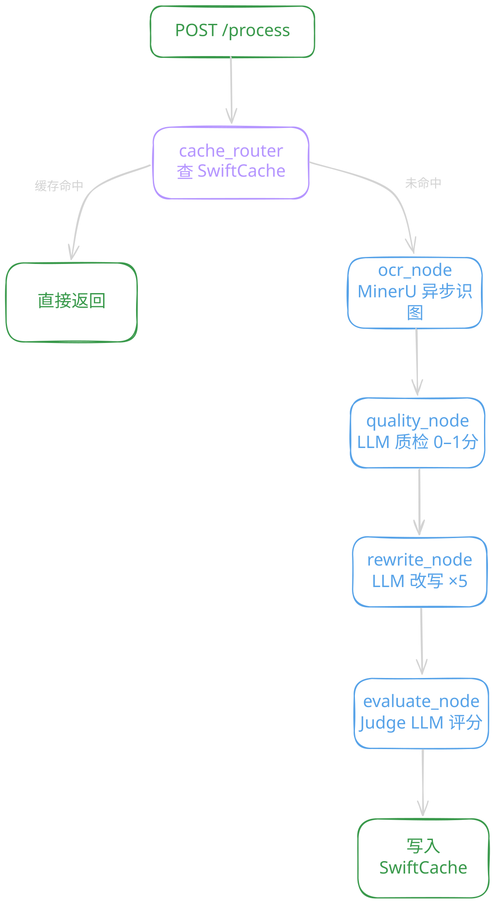

// about
// projects
Netty 主从 Reactor 架构的微服务 API 网关。责任链六类过滤器（Auth/限流/熔断/灰度/日志/路由）， Disruptor 无锁队列削峰填谷，双模式限流（Guava + Redis Lua），Resilience4j 熔断 + Nacos 动态路由。
面向万级 DAU 的社区论坛。Caffeine + Redis 两级缓存使帖子列表 QPS 提升 20 倍， Kafka 异步解耦主链路响应降低 40%，ES + IK 分词实现毫秒级中文全文检索。
Go 分布式 LRU 缓存，benchmark 实测 Get 7ns/op 零内存分配。 一致性哈希 + 虚拟节点 + SingleFlight 防击穿 + Protobuf 序列化。7 天渐进式构建，每天解决一个分布式缓存核心问题。
LangGraph 11 节点工作流：OCR → LLM 改写 → SymPy 验证 → 评分， 异步任务编排 + 缓存服务接口 + 状态机控制流转，把 AI 能力工程化接入生产系统。
教育内容生产管控平台。8 阶段状态机管控 OCR→改写→审核全流程，6 角色 RBAC 绑定每次流转， Celery 异步编排 OCR + LLM 任务，AI 能力通过服务接口接入业务系统。
跨进程确定性哈希 pip 包，解决 Python 内置 hash() 进程间不一致的问题。 栈迭代 MD5、dict 键排序、LRU 缓存，1.8-2.5x 性能提升。
LLM 能力评测工具。PDF 导入题目 → AI 自动批改 → 16次采样取均值 → 方差分析定位模型弱项题型， 帮助合作方有针对性地优化模型。
题目解析桌面工具。PyQt5 界面 + QThread 异步，MinerU OCR 识别题目图片后调用大模型输出解题过程与答案评价，支持批量处理。
// pipeline

cache_router 缓存命中时短路整条链路，跳过全部 LLM 调用； rewrite 按复杂度动态生成 N 个变体（2-5），verify 与 evaluate 真正并行执行； AgentState 作为节点间共享上下文，各节点无直接耦合。
// skills
// experience
// contact